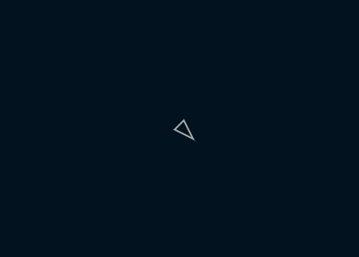

操舵行動の基本
実行例
 実行結果を見る
ソースコード
TypeScript
解説/アルゴリズム
- 追いかける/逃げるなどの各動作に対応する加速度を与える
- 加速度をもとに速度を更新
- 速度をもとに位置を更新
- 加速度を初期化する
詳細は後述しますが、操舵行動でのオブジェクトの基本的な動きは上記の手順となります。
export type Vehicle = {
position: p5.Vector; // 位置
velocity: p5.Vector; // 速度
acceleration: p5.Vector; // 加速度
maxSpeed: number; // 最大速度
maxForce: number; // 最大加速度
};
操舵行動に必要なオブジェクトのプロパティです。
export function run(v: Vehicle): void {
v.acceleration.set(10, 10);
}
追いかける/逃げるなどの各動作に対して、加速度を与えるのですが、今回は単純な動きだけでいいので、加速度に固定値を入れます。
export function update(p: p5, v: Vehicle): void {
v.acceleration.limit(v.maxForce); // 加速度が最大加速度を超えないようにする
v.velocity.add(v.acceleration); // 速度に加速度を足して更新
v.velocity.limit(v.maxSpeed); // 速度が最大速度を超えないようにする
v.position.add(v.velocity); // 位置に速度を足して更新
v.acceleration.set(0); // 加速度をリセット
// 画面端の処理（後述）
adjustEdge(p, v);
}
毎フレーム呼び出される update 関数では、加速度を足して速度の更新を、速度を足して位置の更新を行います。
加速度/速度はそれぞれ上限があり、その値を超えないように調整を行います。 この調整を行うことで無尽蔵に速度が増える続けることはありませんし、急に曲がるような動きをしなくなるので、より動物らしい動きになります。
加速度は毎フレーム初期化する必要があるため、速度に足し合わせた後、0 を代入します。
export function adjustEdge(p: p5, v: Vehicle): void {
// x軸で画面からはみ出たら画面内に戻して速度のx成分を反転する
if (v.position.x < 0) {
v.position.x = 0;
v.velocity.x *= -1;
} else if (v.position.x >= p.windowWidth) {
v.position.x = p.windowWidth - 1;
v.velocity.x *= -1;
}
// y軸で画面からはみ出たら画面内に戻して速度のy成分を反転する
if (v.position.y < 0) {
v.position.y = 0;
v.velocity.y *= -1;
} else if (v.position.y >= p.windowHeight) {
v.position.y = p.windowHeight - 1;
v.velocity.y *= -1;
}
}
オブジェクトが画面外に移動して消えた場合、跳ね返ったり、反対側から出てくるなどの処理で画面内に戻します。
上記では跳ね返る処理を実装しています。
p.setup = () => {
p.createCanvas(p.windowWidth, p.windowHeight);
// 初期位置、初期速度、最大速度、最大加速度を与えてオブジェクトを生成する
const position = p.createVector(100, 100);
const velocity = p.createVector();
const maxSpeed = 8;
const maxForce = 0.1;
vehicle = init(p, position, velocity, maxSpeed, maxForce);
};
p.draw = () => {
// 画面クリア
p.background("#02121e");
run(vehicle); // 加速度を与える
update(p, vehicle); // 加速度をもとに速度、速度をもとに位置を更新する
draw(p, vehicle, "#aaa"); // 位置をもとにオブジェクトを描画する
};
実際に Vehicle オブジェクトを生成して、扱う例となります。